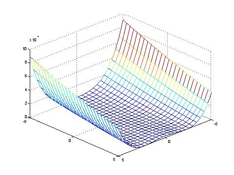
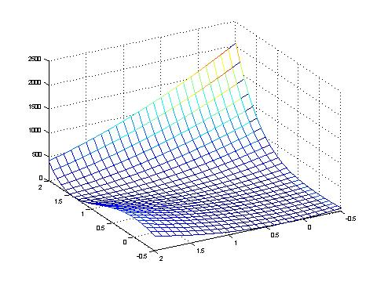

This function is unimodal and continuous, but the global optimum is hard to find, because of independence through the term (x_(i+1) - x_i*x_i)^2 between contiguous parameters.

Rosenbrock's function within the co-domain -5 <= x <= 5.
The global optimum is located in a parabolic formed valley (among the curve x^2 = x_1^2), which has a flat ground.

The function close to its global optimum, which is: f(x) = f(1, 1, ... , 1) = 0.
Rosenbrock' function is not symmetric, not convex and not linear.
Kenneth De Jong. An analysis of the behaviour of a class of genetic adaptive systems. Dissertation, University of Michigan, 1975. Diss. Abstr. Int. 36(10), 5140B, University Microflims No. 76-9381.
Hans Paul Schwefel. Evolution and optimum seeking. Sixth-Generation Computer Technology Series. John Wiley & Sons, INC., 1995.
Darrell Whitley, Soraya Rana, John Dzubera, Keith E. Mathias. Evaluating Evolutionary Algorithms. Artificial Intelligence, 85(1-2):245-276. 1996.
Eberhard Schoeneburg, Frank Heinzmann, Sven Feddersen. Genetische Algorithmen und Evolutionstrategien - Eine Einfuehrung in Theorie und Praxis der simulierten Evolution. Addison-Wesley, 1994.